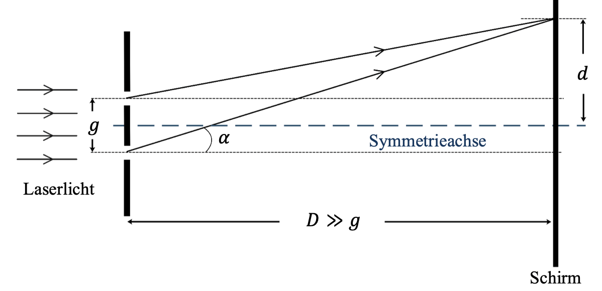
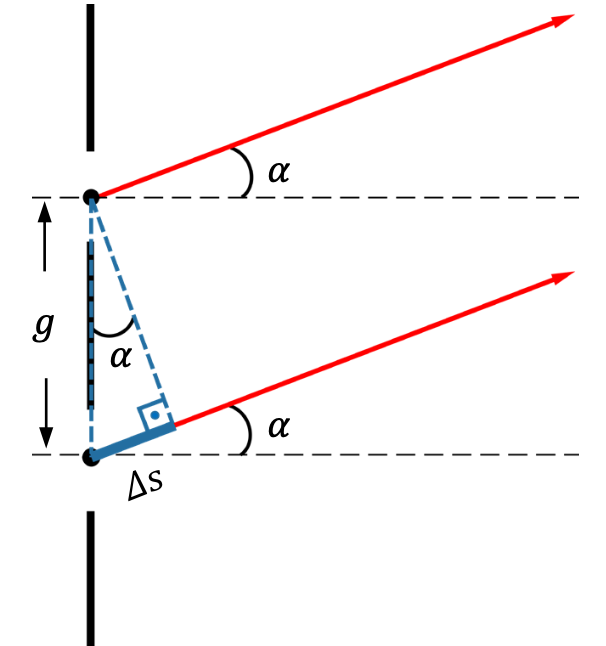
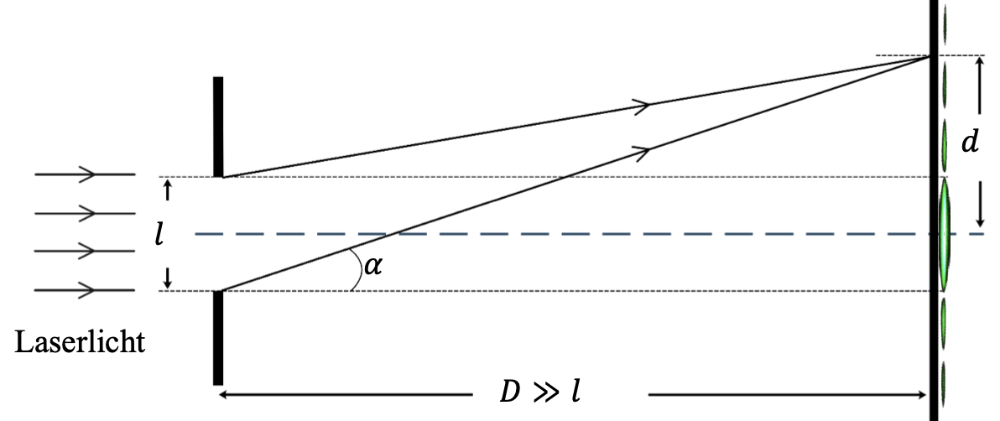
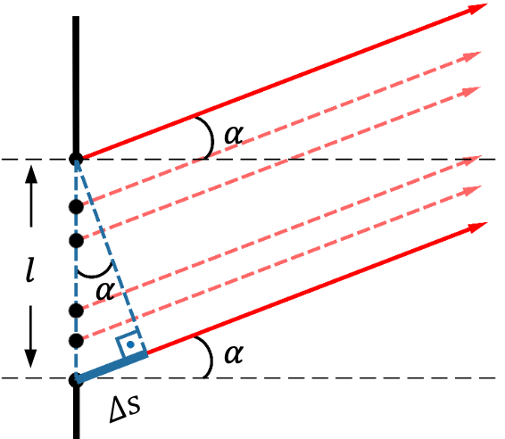
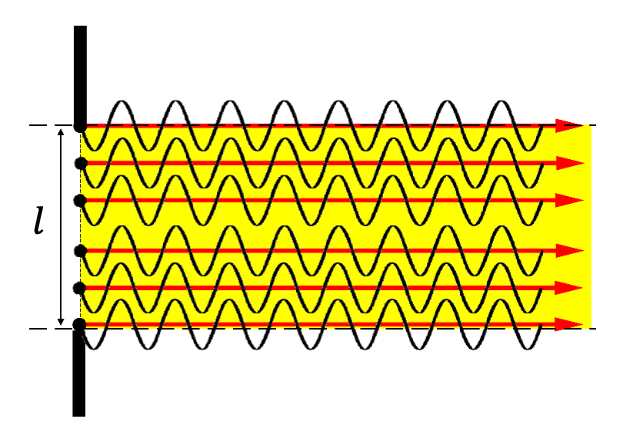
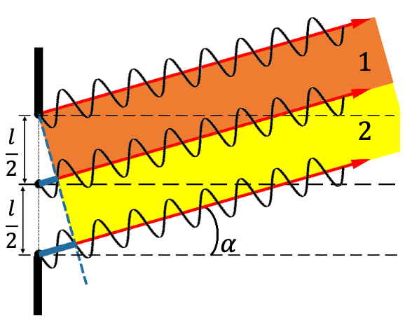
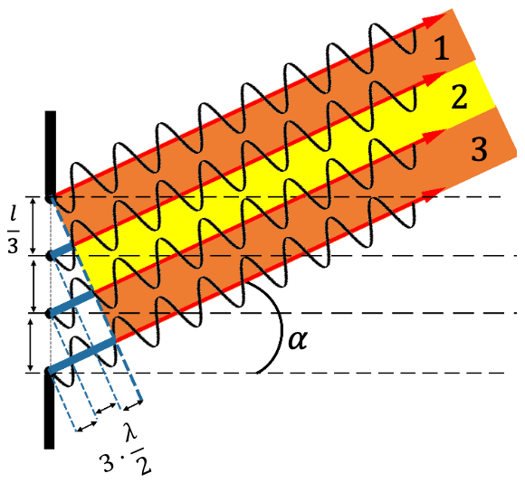
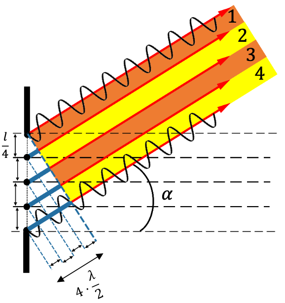

Wellenoptik
Beugung des Lichts
Als Beugung bezeichnet man allgemein das Eindringen von Wellen in den geometrischen Schattenraum. Beugung tritt in Erscheinung, wenn die Ausdehnung \( l \) von Hindernissen oder Öffnungen sich der Wellenlänge des Lichtes annähert. Bei \( \lambda \simeq l \) ist die Beugung besonders ausgeprägt.
Interferenz des Lichtes
Interferenz tritt auf, wenn zwei oder mehrere Wellen gleicher Frequenz an einem Ort zusammentreffen. Dabei addieren sich ihre Elongationen dieses Phänomen heiβt Superpositionsprinzip. Nach dem Zusammentreffen laufen die Wellen ungestört weiter. Je nach Gangunterschied \( \Delta s \) unterscheidet man zwischen:
-
Konstruktiver Interferenz oder Verstärkung
Sie tritt auf wenn der Gangunterschied ein geradzahliges Vielfach der halben Wellenlänge ist.
$$ \Delta s = 2 k \cdot \frac{\lambda}{2}$$ $$ k \in \mathbb{Z} $$ -
Destruktive Interferenz oder Auslöschung
Sie tritt dann auf, wenn der Gangunterschied ein ungeradzahliges Vielfaches der halben Wellenlänge ist.
$$ \Delta s = (2 k + 1) \cdot \frac{\lambda}{2}$$ $$ k \in \mathbb{Z} $$
Das Huygens'sche Prinzip
Jeder Punkt einer Wellenfront ist Ausgangspunkt von einer neuen
kugelförmigen Elementarwelle. Durch Überlagerung oder Superposition
sämtlicher Elementarwellen ergibt sich die Wellenfront.
Da die Elementarwelle kugelförmig ist, bildet sie ebenfalls eine
rücklaufende Welle.
Interferenz des Lichtes am Doppelspalt
 $$ D,\ Distanz\ Schirm\ Doppelspalt$$ $$g,\ Abstand\ zwischen\ Spalten$$ $$\alpha,\ Beugungswinkel $$ Zwei Strahlen, die mittig aus den Spalten kämen, formen diese Grafik. Der Gangunterschied zwischen beiden Strahlen ist also hier \( \Delta s \). Wir erhalten die Formel:
$$ \Delta s = g \cdot \sin(\alpha) $$Verallgemeinerung der Formel
-
Bei \( \alpha_1 = 0 \)
Bei \( \alpha = 0 \) liegen beide Strahlen in Phase der Gangunterschied ist: \( \Delta s = 0 \)
$$ \Delta s = 0 \cdot \frac{\lambda}{2} $$
Wir beobachten ein Helligkeitsmaximum nullter Ordnung \( k = 0 \), auch zentrales Maximum genannt. -
\( \alpha_1 > \alpha_2 \)
Wählen wir \( \alpha_2\) so, dass wir einen Gangunterschied von \( \Delta s = \frac{\lambda}{2} \) erhalten, so legt die unterste Elementarwelle genau eine halbe Schwingung mehr als die oberste zurück. Die beiden Elementarwellen sind in Gegenphase zueinander und interferieren destruktiv. Wir beobachten ein Helligkeitsminimum nullter Ordnung \( k = 0 \).
$$ \Delta s = 1 \cdot \frac{\lambda}{2} $$ -
\( \alpha_2 > \alpha_3 \)
Hier liegen beiden Strahlen in Phase der Gangunterschied ist: \( \Delta s = \lambda \)
$$ \Delta s = 2 \cdot \frac{\lambda}{2} $$
Wir beobachten ein Helligkeitsmaximum erster Ordnung \( k = 1 \) -
\( \alpha_3 > \alpha_4 \)
Wählen wir \( \alpha_4\) so, dass wir einen Gangunterschied von \( \Delta s = \frac{3 \lambda}{2} \) erhalten, sind beide Elementarwellen sind in Gegenphase zueinander und interferieren destruktiv. Wir beobachten ein Helligkeitsminimum erster Ordnung \( k = 1 \).
$$ \Delta s = 3 \cdot \frac{\lambda}{2} $$ -
\( \alpha_4 > \alpha_5 \)
Wenn \( \alpha_5 \) einen Gangunterschied von \( \Delta s = \frac{4 \lambda}{2} \) entsteht konstruktive Interferenz wir beobachten ein Helligkeitsmaximum zweiter Ordnung \( k = 2 \).
$$ \Delta s = 4 \cdot \frac{\lambda}{2} $$
Schlussfolgerungen
-
Beim kontinuierlichen Anstieg des Beugungswinkels wechseln sich helle und dunkle Streifen also regelmäβig ab.
-
Konstruktive Interferenz entsteht dann, wenn der Gangunterschied beider Elementarwellen ein geradzahliges Vielfache ist.
$$ \Delta s = 2 k \cdot \frac{\lambda}{2}$$ $$ k \in \mathbb{Z}$$Es gilt für \( k \in \mathbb{Z} \):
$$\Delta s = g \cdot \sin(\alpha_k)\ (1)$$ $$\Delta s = 2 k \cdot \frac{\lambda}{2}\ (2)$$\( (1) \) in \( (2) \):
$$ \sin(\alpha_k) \cdot g = 2 k \cdot \frac{\lambda}{2}$$ $$ \Leftrightarrow \sin(\alpha_k) = \frac{2k}{g} \cdot \frac{\lambda}{2}$$ -
Destruktive Interferenz entsteht dann, wenn der Gangunterschied beider Elementarwellen ein ungeradzahliges Vielfache ist.
$$ \Delta s = (2 k + 1) \cdot \frac{\lambda}{2}$$ $$ k \in \mathbb{Z}$$Es gilt für \( k \in \mathbb{Z} \):
$$\Delta s = g \cdot \sin(\alpha_k)\ (1)$$ $$\Delta s = 2 k \cdot \frac{\lambda}{2}\ (2)$$\( (1) \) in \( (2) \):
$$ \sin(\alpha_k) \cdot g = (2 k + 1) \cdot \frac{\lambda}{2}$$ $$ \Leftrightarrow \sin(\alpha_k) = \frac{2 k + 1}{g} \cdot \frac{\lambda}{2}$$
Beugung und Interferenz am Einfachspalt
 $$ D,\ Distanz\ Schirm\ Einfachspalt$$ $$l,\ Abstand\ der\ Öffnung$$ $$\alpha,\ Beugungswinkel $$Nach dem Huygens'schen Prinzip sind alle Punkte der Spaltöffnung Zentren für Elementarwellen.
Es gilt:
$$ \Delta s = \sin(\alpha) \cdot l $$-
Bei \( \alpha = 0 \) liegen alle Strahlen in Phase der Gangunterschied ist: \( \Delta s = 0 \)

Wir beobachten ein Helligkeitsmaximum nullter Ordnung \( k = 0 \), auch zentrales Maximum genannt.Maximum:
$$ \Delta s = 0 \cdot \frac{\lambda}{2} $$ -
Bei noch gröβerem Beugungswinkel kann der Gangunterschied zwischen den Randstrahlen $\Delta s = \lambda$ betragen.

Strahlen aus dem ersten Teilbündel interferieren destruktiv mit den Strahlen aus dem zweiten Teilbündel, da diese $\frac{\lambda}{2}$ von einander entfernt sind.
Es bleiben also keine Strahlen die nicht destruktiv interferieren übrig kein Licht erreicht also den Schirm.Minimum:
$$ \Delta s = 2 \cdot \frac{\lambda}{2}$$ -
Wird $\alpha$ so groβ, dass der Gangunterschied $\frac{3\lambda}{2}$ beträgt so interferieren nur 2 der 3 Teilbündel destruktiv.Es interferieren also Teilbündel 1 und Teilbündel 2 miteinander. Wir erhalten also $\frac{1}{3}$ des Lichtes am Schirm.
Maximum:
$$ \Delta s = \frac{3\lambda}{2} $$ -
Wird $\alpha$ nun so groβ, dass der Gangunterschied $\frac{4\lambda}{2}$ beträgt so interferieren Teilbündel 1 und 2 sowie 3 und 4 destruktiv miteinander. Wir erhalten also kein Licht auf dem Schirm in dieser Konfiguration.
Minimum:
$$ \Delta s =4 \cdot \frac{\lambda}{2}$$ -
Beim kontinuierlichen Anstieg des Beugungswinkels wechseln sich helle und dunkle Streifen also regelmäβig ab.
-
Destruktive Interferenz entsteht dann, wenn der Gangunterschied beider Elementarwellen ein geradzahliges Vielfache ist.
$$ \Delta s = 2 k \cdot \frac{\lambda}{2}$$ $$ k \in \mathbb{Z}^*$$Es gilt für \( k \in \mathbb{Z}^* \):
$$\Delta s = l \cdot \sin(\alpha_k)\ (1)$$ $$\Delta s = 2 k \cdot \frac{\lambda}{2}\ (2)$$\( (1) \) in \( (2) \):
$$ \sin(\alpha_k) \cdot l = 2 k \cdot \frac{\lambda}{2}$$ $$ \Leftrightarrow \sin(\alpha_k) = \frac{2k}{l} \cdot \frac{\lambda}{2}$$ -
Konstruktive Interferenz entsteht dann, wenn der Gangunterschied beider Elementarwellen ein ungeradzahliges Vielfache ist.
$$ \Delta s = (2 k + 1) \cdot \frac{\lambda}{2}$$ $$ k \in \mathbb{Z}^*$$Es gilt für \( k \in \mathbb{Z}^* \):
$$\Delta s = l \cdot \sin(\alpha_k)\ (1)$$ $$\Delta s = 2 k \cdot \frac{\lambda}{2}\ (2)$$\( (1) \) in \( (2) \):
$$ \sin(\alpha_k) \cdot l = (2 k + 1) \cdot \frac{\lambda}{2}$$ $$ \Leftrightarrow \sin(\alpha_k) = \frac{2 k + 1}{l} \cdot \frac{\lambda}{2}$$
Schlussfolgerungen
Gitterkonstante
Ein Beugungsgitter besteht aus $N$ parallelen Spaltöffnungen, deren
Mittelpunkte den gleichen Abstand haben. Dieser Abstand wird
Gitterkonstante genannt.
Bei einem Gitter wird oft die Anzahl $n$ der Spalte in $\frac{1}{mm}$
angegeben. Dann beträgt die Gitterkonstante:
Beugung und Interferenz am Gitter
Bei $\alpha = 0^{\circ}$ ist der Gangunterschied $\Delta s = 0$ alle
Elementarwellen sind in Phase. Wir erhalten also konstruktive
Interferenz.
Auf dem Schirm entsteht ein Hauptmaxima nullter Ordnung $k=0$.
Ist $\alpha$ so groβ, dass der Gangunterschied $\Delta s = 2k \cdot \frac{\lambda}{2}$ beträgt so sind alle Elementarwellen sind in Phase. Wir erhalten also konstruktive Interferenz.
Schlussfolgerungen
Konstruktive Interferenz bei:
$$ \Delta s = 2k \cdot \frac{\lambda}{2} $$ $$\Leftrightarrow g \cdot \sin(\alpha_k) = 2k \cdot \frac{\lambda}{2} $$ergibt:
$$ g \cdot \sin(\alpha_k) = \frac{2k}{g} \cdot \frac{\lambda}{2} $$mit $k \in \mathbb{Z}$
Gültigkeitsbedingung
Damit ein Hauptmaximum auf einem endlichen Schirm abgebildet werden kann muss $sin(\alpha_k) < 90^{\circ}$ oder $sin(\alpha_k) < \frac{\pi}{2}$ sein:
$$ | \sin(\alpha_k) | < 1 $$ $$ \Leftrightarrow |\frac{2k}{g} \cdot \frac{\lambda}{2}| < 1$$ $$ \Leftrightarrow |\frac{k\lambda}{g}| < 1$$ $$ \Leftrightarrow |k| < \frac{g}{\lambda}$$